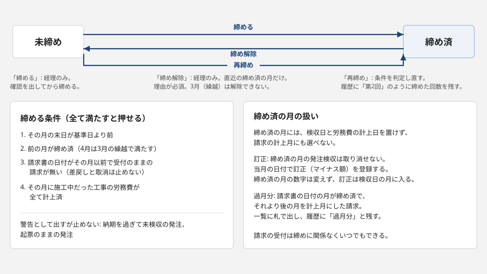

業務整理
設備工事の会社の、工事ごとの受発注から発注検収、請求の確認、労務費の計上、月次の締めまでを1枚に整理しました。会社名は青嶺設備工業株式会社（架空）で、工事名、取引先名も全て架空です。
会社の設定
- 会社名
- 青嶺設備工業株式会社（架空）
- 業種
- 設備工事（空調、給排水、衛生、電気、消防、改修）
- 人数と役割
- 20人ほど。営業2人、工事担当4人、購買1人、経理1人。ほかは現場の作業員
- 工事
- 15件が同時に動いている。見積中2、受注2、施工中6、検収済2、請求済2、完了1
- 取引先
- 15社。施主5社、仕入先5社、外注先5社
- 年度
- 4月始まり
- 基準日
- 2026年9月8日。8月分の締めの作業をしている月初
- 月の状態
- 2026年3月は期首の締め済（繰越）。4月から7月は締め済。8月は未締め。9月は当月
- 金額
- 全て税抜。施主への請求と入金は工事ごとに1回
- 労務費
- 日報の時間に会社の標準の時間単価を掛けて出す。経理が月に1回、工事ごとに計上する
- 検収
- 施主が引き渡しを受けることを施主検収、仕入先や外注先の納品や出来高を確かめることを発注検収と書き分ける
金額の言葉
- 予算
- 実行予算（当初）に承認済の予算改定の差額を足した今の額。費目ごとに持つ
- 発注済
- 発注で使うと決まった額。承認済と検収済の発注の額に、打切の発注の発注検収の累計を足す。起票と取消は入れない。労務費は計上額をそのまま入れる
- 発生原価
- 発注検収の累計と労務費の計上額の合計
- 計上額
- 確認済の請求額と労務費の計上額の合計
- 残
- 予算から発注済を引いた額
- 消化率
- 発注済を予算で割った割合
日々の流れと月末の流れ
日々の流れ
- 営業が工事を登録する。見積中の間に受注金額と実行予算（材料費、外注費、労務費、経費）を入れ、受注にすると実行予算（当初）が固定される。
- 工事担当が着工日を入れ、工事が施工中になる。
- 材料や外注が要るときは、工事担当が発注を起票する。予算を超えるときは理由を書く。
- 購買が起票を見て承認するか、修正依頼で戻す。承認のときに予算超過を判定し直し、理由が無ければ承認できない。承認した日が発注日になる。
- 納品や出来高を確かめたら、工事担当が発注検収を登録する（購買も登録できる）。検収日は未締めの月で、発注日以後に限る。
- 請求書が届いたら、経理が受け付ける。判定が確定できるなら、計上月を選んで確認する。発注検収の無い発注の請求は確認できない。
- 予算が足りなくなったら、工事担当が予算改定を起案し、営業が承認する。当初の値は変わらず残る。
- 工事担当が施主検収日を入れると、工事は検収済になる。そのあと経理が施主に1回で請求し、入金を受けて完了にする。
月末の流れ
- 工事担当が月末の出来高を確かめ、発注検収を登録する。
- 経理が、その月に施工中だった工事ごとに労務費を計上する。時間の無い工事も0として計上する。
- 経理が、受付のままの請求を確認、差戻し、取消のどれかにする。
- 経理が月を締める。締める条件は次の4つで、全て満たすと締められる。
- その月の末日が過ぎている
- 前の月が締め済である
- 請求書の日付がその月以前で、受付のままの請求が無い
- その月に施工中だった工事の労務費が全て計上済である
納期を過ぎて未検収の発注と、起票のままの発注は、件数を警告に出すが締めは止めない。
- 締め済の月には、その月の日付で発注の承認、発注検収、労務費の計上ができず、その月を請求の計上月に選べない。請求の受付は締めに関係なくいつでもできる。
- 締めた後に分かった直しは、未締めの月に入れる。発注検収は当月の日付で訂正（マイナス額）を登録する。締め済の月の日付の請求書は、未締めの月を計上月にして確認し、過月分として残す。
- 締め済の月そのものを直すときは、経理が理由を付けて締めを解除する。解除できるのは直近の締め済の月だけで、2026年3月（繰越）は解除できない。もう一度締めるときは条件を判定し直し、履歴に「第2回」のように締めた回数を残す。

締めの流れ図だけを開く
詰まっている所
| 詰まっている所 | 起きていること | 画面での扱い |
|---|
| 予算超過に後で気付く |
月初の会議で初めて分かる。超えた理由が残らない。承認する購買から予算の残りが見えない |
起票の画面に費目の残を出し、超えるときは理由を必須にする。承認のときにも判定し直す |
| 請求書の照合 |
発注検収の記入より先に請求書が届く。同じ発注の請求書が2通届く |
受け付けた時点で判定を出す。発注検収なしは確認できない。二重の疑いは2通を並べて見せ、正本でない方を取り消す |
| 締めた後の書き込み |
締めた月の日付で発注検収が書き足され、台帳と資料を作り直す。何が変わったかが残らない |
締め済の月の日付は入れられない。直しは当月の訂正か過月分で入れ、履歴に残す |
表1 誰がいつ何を入力して何が出るか
| 誰が | いつ | 何を入力する | 何が出る |
|---|
| 営業 | 引き合いを受けたとき、受注が決まったとき | 工事の登録（工事名、施主、工事場所、工事種別、見積金額、着工予定日、完工予定日）。受注のときは受注金額、受注日、工事担当、実行予算（当初。材料費、外注費、労務費、経費） | 見積中の工事として工事一覧に載る。受注になると実行予算（当初）が固定される |
| 工事担当 | 着工した日、施主検収を受けた日 | 着工日、施主検収日 | 工事が施工中、検収済に進む |
| 工事担当 | 材料や外注が要るとき | 発注の起票（取引先、費目、件名、発注金額、納期。予算を超えるときは理由） | 購買の承認待ちに並ぶ。費目ごとの残と、予算を超えるかどうかが出る |
| 購買 | 起票が届いたとき | 発注の承認、または修正依頼（依頼の文言） | 承認した日が発注日になり、発注済に入る。修正依頼は起票のまま工事担当に戻る |
| 工事担当 | 納品や出来高を確かめたとき | 発注検収（検収日、検収額、内容） | 発生原価に入り、未検収残が減る |
| 工事担当 | 予算が足りなくなったとき | 予算改定の起案（費目、改定後の額、理由） | 営業の承認待ちに並ぶ |
| 営業 | 起案が届いたとき | 予算改定の承認 | 予算（今の値）と消化率が変わる。当初の値は残る |
| 経理 | 請求書が届いた日 | 請求の受付（発注番号、請求書番号、請求書の日付、請求額） | 判定（二重の疑い、発注検収なし、検収額を超えている、確定できる） |
| 経理 | 判定が確定できるになったとき | 請求の確認（計上月） | 計上額に入り、支払予定日が出る |
| 経理 | 月の締めの前（日報の集計がそろったとき） | 労務費の計上（工事ごとの時間、単価） | 発生原価と計上額に入る |
| 経理 | 施主検収の後、請求書を出した日と入金を確かめた日 | 施主請求日と請求額、入金日 | 工事が請求済、完了に進む。完了は、発注ごとの検収累計と確認済の請求額が一致してから |
| 経理 | 翌月の初め | 月次の締め | その月の日付で発注の承認、発注検収、労務費の計上ができなくなり、その月を請求の計上月に選べなくなる |
表2 資料から決められることと確認が要ること
資料から決められること
| 決められること |
|---|
| 工事の状態は6つで、順にしか進まない |
| 予算を超える発注には理由が要り、承認のときにも判定し直す |
| 発注検収の無い発注の請求は確認できない |
| 締め済の月には、発注検収、労務費、請求の計上を入れられない（発注日は承認した日で決まる） |
| 取消は削除にせず、理由と履歴を残す |
| 発注の起票と承認は別の役割（工事担当と購買）が行う |
| 施主検収と発注検収を書き分ける |
確認が要ること
| 確認が要ること | どちらに決めるかで画面の作りが変わる理由 |
|---|
| 失注した見積の扱い | 状態を1つ足すなら一覧の絞り込みと件数が変わり、取消で持つなら取消の理由の選び方が要る |
| 予算改定を誰が承認するか | 営業か工事の責任者かで、承認のボタンを出す役割と権限の表が変わる |
| 複数の発注をまとめた仕入先の請求書 | 認めるなら請求を発注ごとに分ける明細の欄が要り、請求の確認の判定が明細の単位になる |
| 税込の請求と端数 | 税込で受けるなら税率と端数の欄が要り、発注検収の額との照合の式が変わる |
| 施主への出来高請求と分割入金 | 認めるなら施主請求と入金を回数ごとに持つ表が要り、請求済と完了の判定が変わる |
| 労務費の時間単価 | 一律なら単価は設定1つ、人ごとなら日報を人の単位で持つ表が要る |
| 施主への請求（売上）を締めの対象にするか | 対象にするなら施主請求日と入金日にも締めの判定が掛かり、締めの確認に売上の欄が要る |
| 確認済の請求を後から減らす場合（仕入先の赤伝） | 扱うならマイナスの請求の受付と、元の確認済の請求に関連付ける欄が要る |